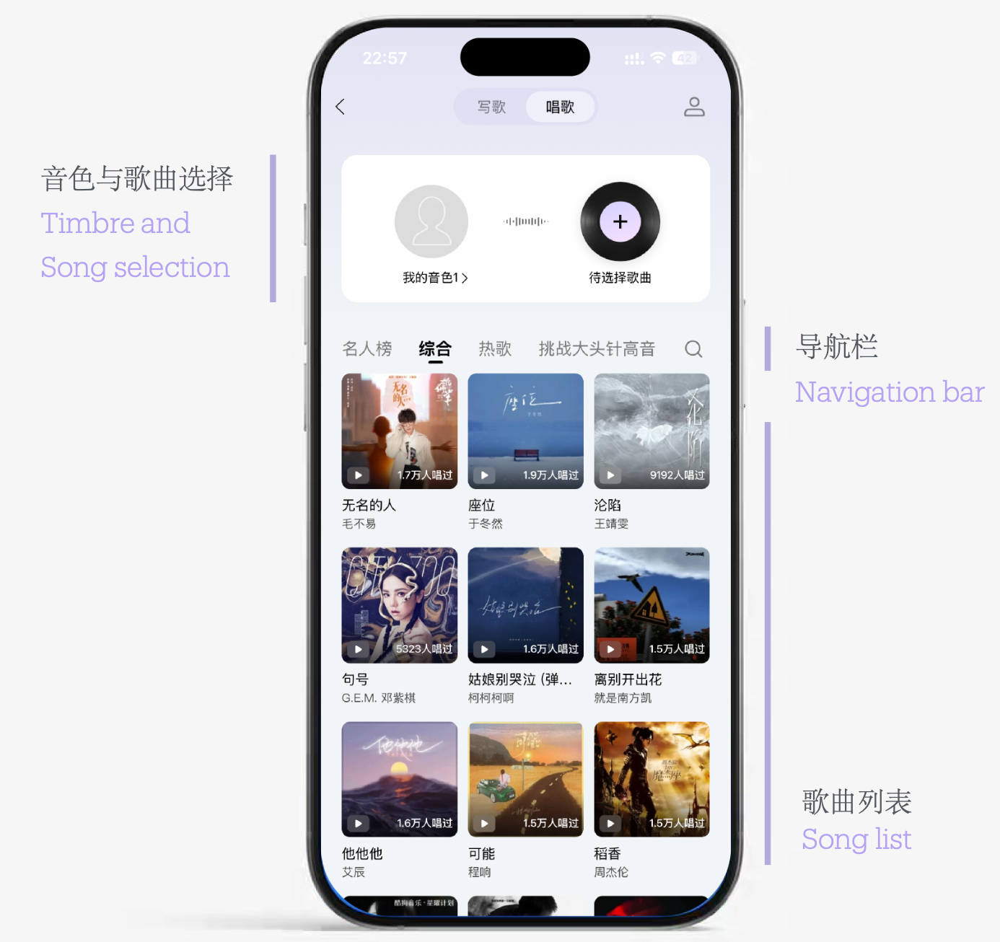
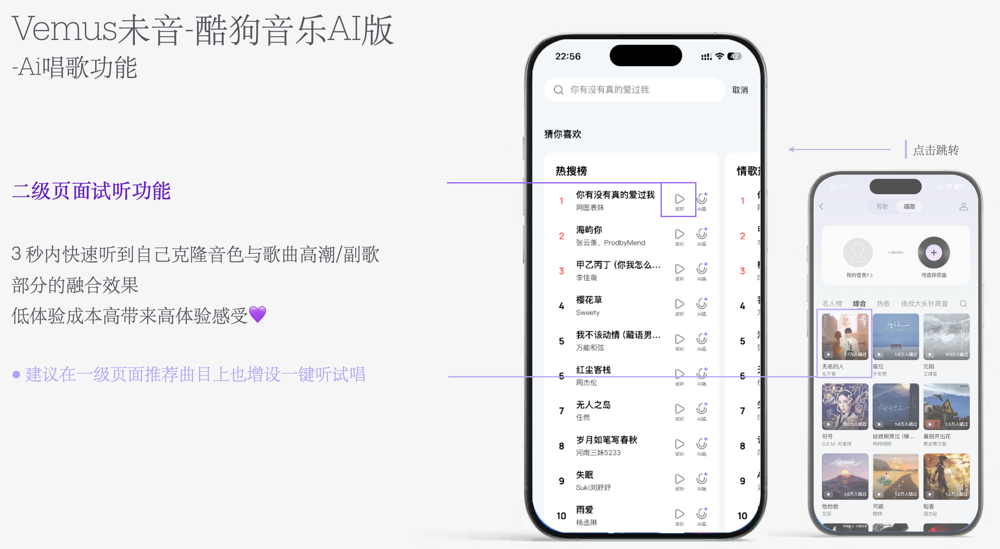
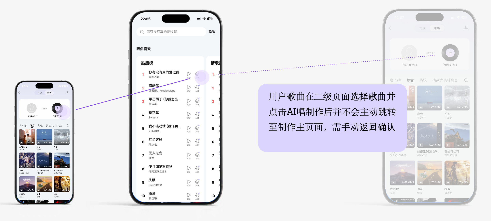
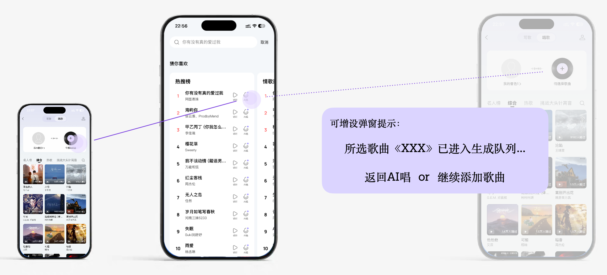
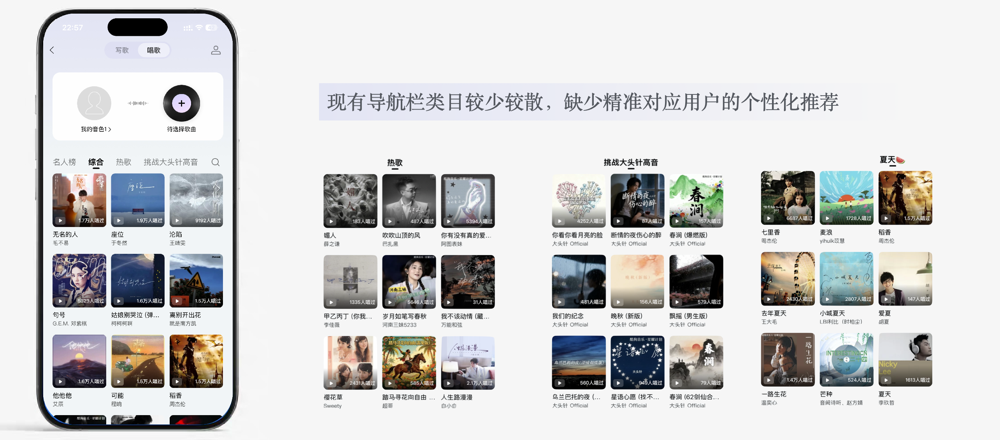

本报告聚焦「AI 作歌」与「AI 唱歌」两大核心功能的实际体验，记录真实使用过程中发现的亮点、问题，并给出对应的优化思路。
VEMUS 未音定位为「一站式 AI 音乐创作发行平台」，主打 听歌 / 作歌 / 唱歌 三大音乐日常。
聊天即生成音乐，支持灵感作歌 / 定制歌词 / 图片作歌 / 纯音乐创作，一键完成完整词曲编唱。
把歌词片段、曲风灵感留在 AI 画布中，帮助整理、联想、延展，沉淀专属个人灵感库。
生成作品可一键发行至 QQ音乐、酷狗音乐、酷我音乐、全民K歌、JOOX 五大平台。
母带、分轨、MIDI、曲谱等 AI 后期工具，显著降低音乐创作的技术门槛。
多模态生成（对话 / 关键词情绪标签 / 粘贴文本 / 上传图片 4 种入口）；独家 Remix 一键风格转换（抒情→说唱）、男声→女声、上传哼唱生成伴奏、实时风格迁移；社区生态含作品发布、二创接龙、热歌排行；几秒内生成 44.1kHz 高清音质，支持分享至朋友圈 / 小红书 / TikTok；风格覆盖流行、民谣、摇滚、电子、说唱、国风、金属等。
到了世界杯前夜，氛围越来越浓厚，想配上一首独属于自己的世界杯歌曲，吃着小串喝着小酒、听着音乐沉浸式追球。于是打开未音 App，想要创造一首符合当下心情的歌曲。
界面非常简约大气，有个对话框可以输入作歌灵感，AI 会先根据灵感生成歌词；若无灵感，对话框下方也有提示信息，往往能顺势激发灵感。歌词可反复修改——例如想增加西班牙元素、亚马尔、罗德里等巨星，便要求 AI 重新修改，直至满意。

未音「AI 唱」功能首页：写歌/唱歌双 Tab 切换 · 我的音色管理 · 待选择歌曲 · 歌曲列表网格展示

左：二级页面「猜你喜欢」热搜榜 / 情歌榜，每首歌曲均配有试听和 AI 唱入口
右：一级页面综合推荐区，含人名榜 / 热歌 / 挑战大头针高音等分类
不用进入制作流程就能先听到效果，试错成本很低，用户更容易决定要不要继续。

问题页设计示意：用户点击「AI 唱制作」后无自动跳转反馈，需手动返回确认

方案设计：点击制作后弹出引导弹窗 —— 「所选歌曲已进入生成队列… 返回 AI 唱 / 继续添加歌曲」

当前问题：导航类目较少较散，缺少精准对应用户的个性化推荐；且生成后默认公开
双层级索引：大类型下细分更多专题，并与主站/其他音乐平台绑定联动。
推荐专题：
· 热歌榜单 / 限时专题 / 个性推荐
· #近日常听 · #你的喜欢 · #热榜100 · #流行经典 · #强势新歌
· #挑战大头针高音 #夏天🍉
· #收藏歌单 #猜你喜欢
公开策略：生成后增设询问弹窗（公开 or 私密）/ 设置草稿箱；设为公开后可进一步提示「分享至站外平台可获得推流」。
实际体验下来，优势主要体现在中文歌词质量、腾讯发行渠道、上手门槛和价格这几个方面。
深度理解中国文化语境，中文歌词质量远超 Suno 等国际竞品。
「创作→5大平台发行→版权收益」闭环，竞品难以复制。
对话/图片即生成完整词曲编唱，商业标准音质。
免费+积分制；价格远低于 Suno/Udio等竞品。
| 维度 | 说明 |
|---|---|
| 无独立桌面版 | 无 PC 客户端，电脑创作需借模拟器，Web 端为 SPA、重度依赖 JS。 |
| 英文创作偏弱 | 中文专精的代价是英文创作非强项，对比 Suno / Udio 有差距。 |
| 古典/极致音质不占优 | 极端高保真古典创作不如 AIVA 类专业工具。 |
| 免费版商用受限 | 免费生成作品可能有使用限制，商用需会员授权，需关注最新政策。 |
| 行业版权大环境争议 | AI 音乐训练数据、生成物版权仍处法律灰色地带，存在诉讼/合规风险。 |
| 人声合成透明度低 | 官方强调「唱歌/演唱」但未公开是否支持音色克隆、虚拟歌手等技术细节，规则不透明。 |
| 分成规则不透明 | 发行到 QQ音乐等后收益分配、结算方式未在公开页面披露，需查《用户协议》。 |
| 指令识别敏感度 | 结合历史对话修改歌词时 AI 易生硬突出指令词，语句通顺度待提升（作歌实测）。 |
VEMUS 未音在中文歌词质量和腾讯系发行渠道上有明显优势，但桌面端缺失、英文/古典偏弱、版权透明度待提升。AI 唱歌是差异化亮点，但跳转链路、导航推荐、公开策略三项需优先优化。
想快速出歌送礼 / 做 vlog BGM：直接用「对话作歌」「图片作歌」，几秒出片。
想玩风格实验：用 Remix 把抒情改电音、男声改女声，玩起来确实上头。
先用灵感画布沉淀，再生成 + 母带分轨精修，会员解锁商用授权。
商用前务必查阅最新《用户协议》确认版权与分成。
未音的交互门槛确实低，随便聊两句就能出一首歌，玩起来挺有意思。但目前作歌侧的指令理解和付费提示、唱歌侧的跳转链路和导航推荐都还有明显改进空间，这几块改好了，日常用起来会更顺手。